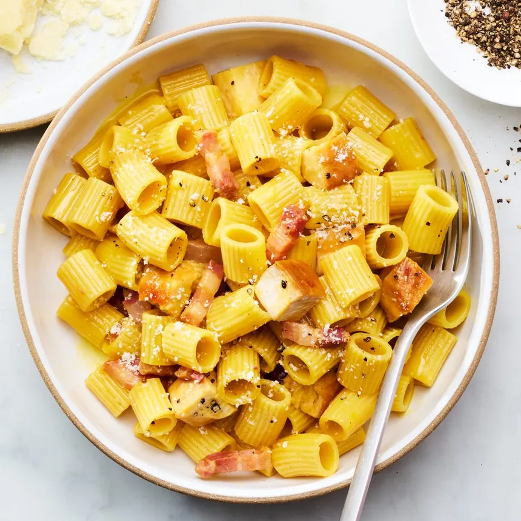

Pasta Recipe

Home Page
Description
Pasta is a versatile Italian dish made from wheat noodles, cooked and tossed with sauces, vegetables, and optionally meat or seafood. It can be creamy, tangy, or spicy depending on the sauce used, and is a favorite comfort food worldwide.
Ingredients
- Pasta – spaghetti, penne, or fusilli, boiled until al dente.
- Vegetables – onion, bell pepper, tomato, spinach, mushrooms, sliced thin.
- Garlic – finely chopped for flavor.
- Meat / seafood (optional) – chicken, shrimp, or minced meat.
- Olive oil – for sautéing.
- Tomato sauce / cream sauce – depending on pasta type.
- Herbs – basil, oregano, or parsley for aroma.
- Cheese – parmesan or mozzarella, grated for topping.
- Salt & pepper – to taste.
Steps
- Boil pasta – Cook until al dente, drain, and set aside.
- Prepare vegetables & meat – Slice vegetables thin and cook meat or seafood until done.
- Sauté – Heat olive oil, add garlic, then vegetables, and cook until tender.
- Add sauce – Pour in tomato or cream sauce, mix well, and simmer for a few minutes.
- Combine – Toss cooked pasta with sauce, vegetables, and meat. Mix until evenly coated.
- Garnish & serve – Sprinkle herbs and cheese on top and serve hot.